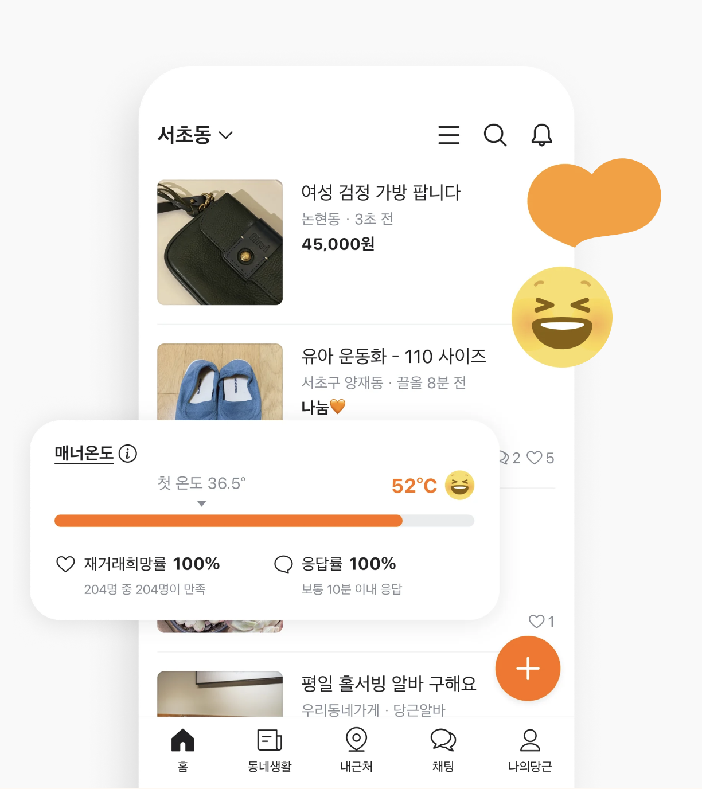
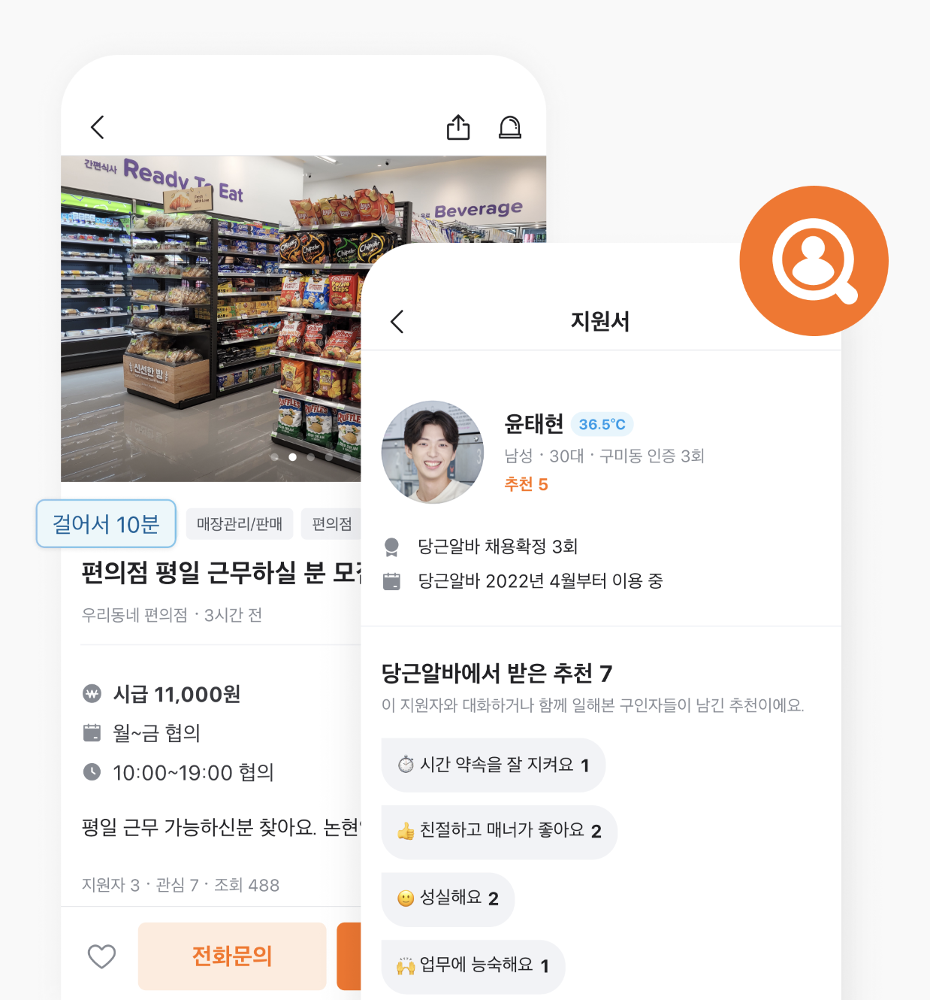

당신 근처의
지역 생활 커뮤니티
동네라서 가능한 모든 것
당근에서 가까운 이웃과 함께해요.

믿을만한
중고거래
믿을만한
이웃 간 중고거래
동네 주민들과 가깝고 따뜻한 거래를
지금 경험해보세요.
동네 생활
이웃만 아는
동네 정보와 이야기
우리동네의 다양한 정보와 이야기를
공감과 댓글로 나누어요.
-
동네모임
근처 이웃들과 동네
이야기를 해보세요. -
동네질문
궁금한 게 있을 땐
이웃에 물어보세요. -
동네분실센터
무언가를 잃어버렸다
면
글을 올려보세요.

걸어서 10분!
알바
걸어서 10분!
동네 알바 구하기
당근하듯 쉽고, 편하게
당근 알바로 동네 알바를 구할 수 있어요.
알바
걸어서 10분!
동네 알바 구하기
당근하듯 쉽고, 편하게
당근 알바로 동네 알바를 구할 수 있어요.